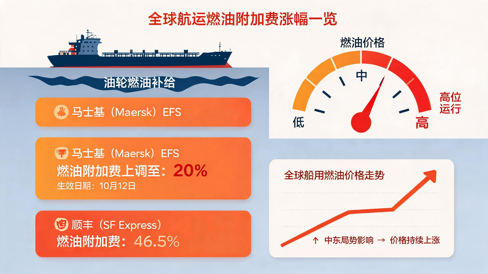
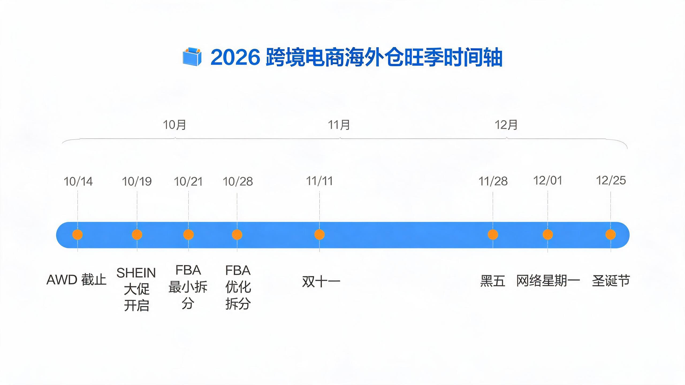
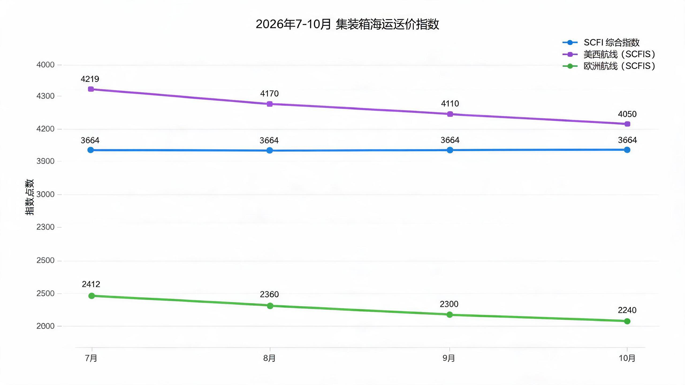
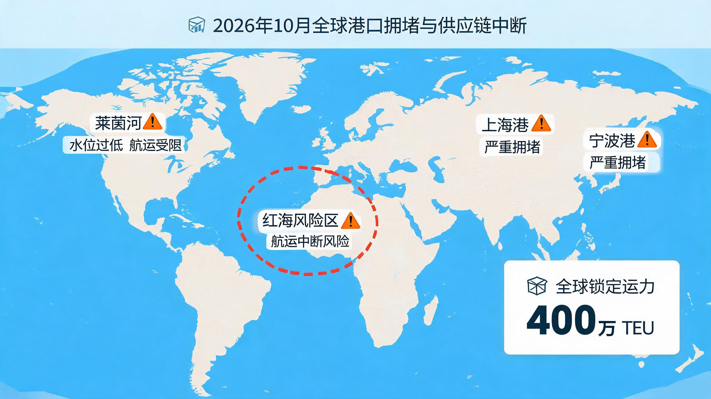
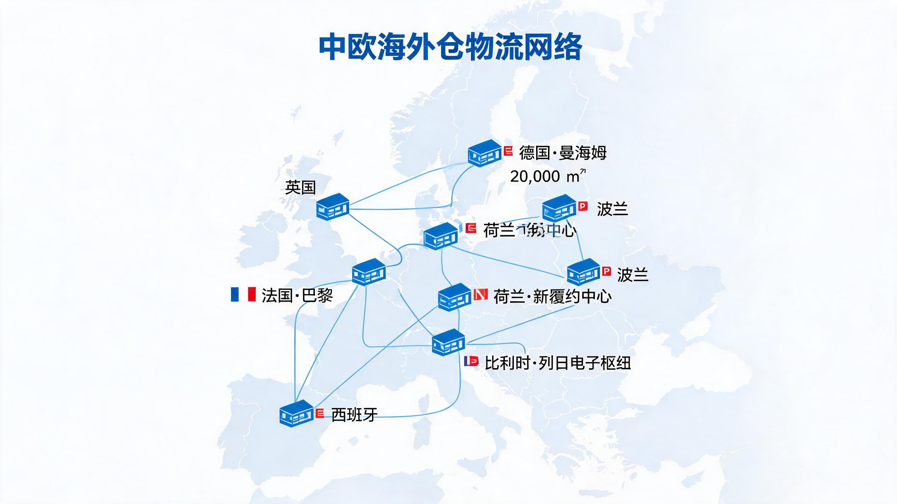
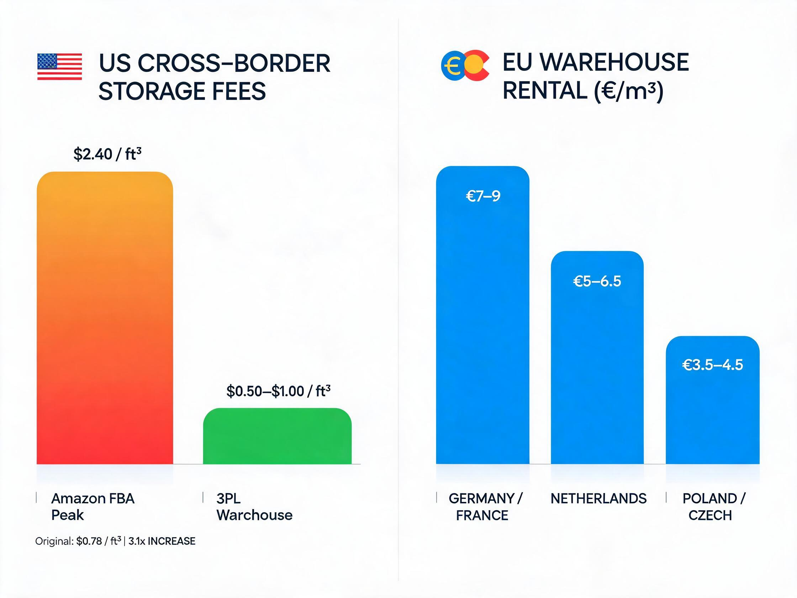
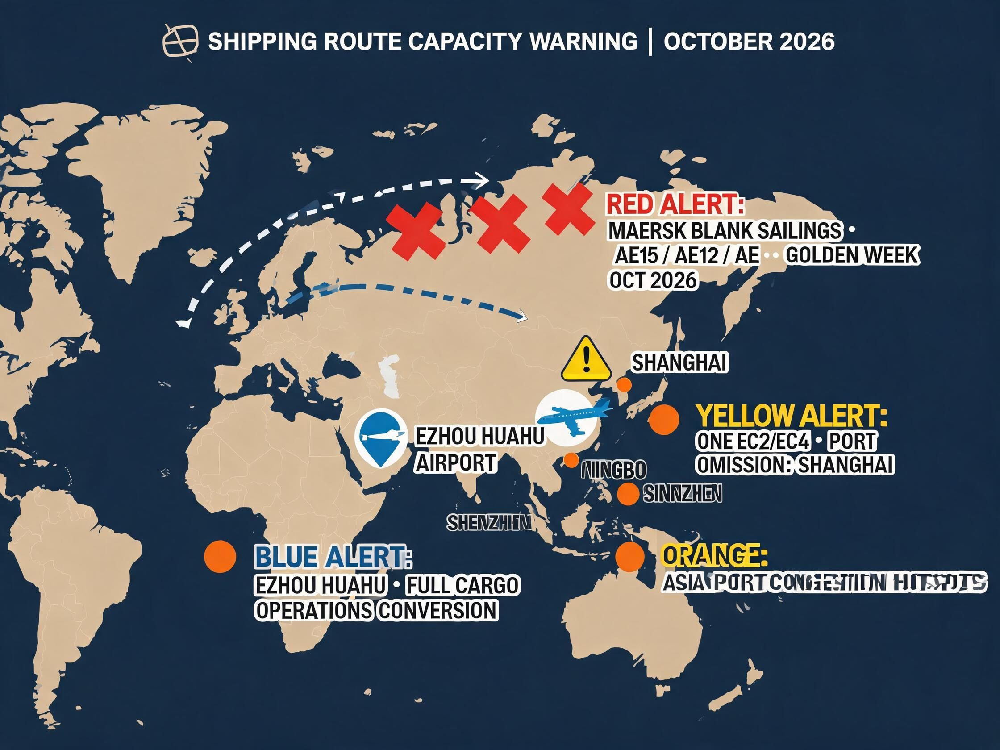

海外仓市场资讯简报
本期聚焦 10 月 3-10 日已发生事件与 10 月中下旬即将到来的关键节点。核心判断：马士基 10 月 8 日宣布紧急燃油附加费（EFS）上调至 20%，10 月 12 日生效——本周末即将执行，直接影响英国/爱尔兰内陆运输成本；SCFI 综合指数 10 月 9 日报 3,664.11 点（微涨），SCFIS 欧线 2,412.18 点（-1.2%）持续疲软，运价"美强欧弱"分化明确。旺季方面，亚马逊黑五 FBA 入库截止仅剩 4-18 天（AWD 10/14、单点 10/21、优化拆分 10/28），SHEIN 年末大促 10 月 19 日启动——下周即开战。WTO 上调 2026 年全球货物贸易增长预期至 3.9%（10 月 8 日发布）。全球港口拥堵锁住约 400 万 TEU 运力，莱茵河低水位持续挑战欧洲内陆运输。欧盟海关改革 11 月 1 日前引入单独处理费，低值直邮成本进一步上升。本期新增五大关注维度：欧洲海外仓仓租梯度（波兰/捷克成本仅为德国/法国一半）、美国 FBA 旺季仓储费 3.1× 上涨（$0.78→$2.40/cu ft/月）且旺季配送费 +$0.32/件 + 3.5% 燃油附加费、DHL 旺季需求附加费 10/1 起征收 + 乌克兰限重 30kg、马士基黄金周停航 3 航次 + ONE 跳港上海 + 鄂州机场全面货运化、FBA vs 3PL 旺季仓储成本差 2.4-4.8×。
00本周值得做的判断
每条判断均给出理由、影响与下一步，可直接用于销售与业务沟通。聚焦 10/3-10/10 已发生事件 + 10 月中下旬即将到来节点。
01燃油费预警：马士基 EFS 上调至 20% 本周末生效，燃油成本传导链条已启动
- 发生了什么
- 马士基 10 月 8 日在其官网宣布，因中东冲突导致燃油成本上涨，将英国、爱尔兰地区内陆运输环节的紧急燃油附加费（EFS）上调至 20%，10 月 12 日起生效[1][2]；马士基 Fossil Fuel Fee（FFF）新费率已于 10 月 1 日生效（基于 Platts VLSFO/LSMGO 指数）[3]；顺丰国际燃油附加费 10 月 5-11 周费率为 46.5%[4]。
- 生效时间
- 马士基 EFS：2026 年 10 月 12 日起（本周末即生效）；FFF：已于 10 月 1 日生效。
- 影响范围
- 英国、爱尔兰内陆运输环节（不含远洋海运段）；远东→南非/毛里求斯旺季附加费（PSS）10 月 15 日生效[5]；北欧→美国航线 PSS 仍在执行[6]。
- 影响订单
- 英国/爱尔兰尾程派送成本即时上涨；远东→南非航线 40 尺柜将加收 PSS；亚欧→地中海航线 PSS 自 7 月持续至今（40 尺柜 1,800→2,800 美元）[7]。
- 销售怎么用
- 本周末（10/12）即生效，周一（10/13）第一时间通知英国/爱尔兰方向客户："马士基 EFS 已上调至 20%，尾程成本即时上涨，建议锁定 10 月内出库批次。"对远东→南非方向客户提示 10/15 PSS 生效前赶发可节省费用。
- 客服怎么处理
- 英国/爱尔兰方向在途订单需主动核查尾程费用是否包含 20% EFS；如未含，需补差并告知客户。远东→南非方向 10/15 前后订单需区分 PSS 适用批次。
- 替代方案
- 英国/爱尔兰方向可评估非马士基渠道的尾程替代方案；远东→南非可评估 10/15 前赶发或转其他船司。
- 下次更新
- 下周简报跟踪马士基 EFS 是否扩展至其他区域，以及中东局势对原油/燃油价格的持续影响。

02节假日运输调度：黑五 FBA 入库截止倒计时 4-18 天，旺季发运窗口本周进入最后阶段
- 发生了什么
- 亚马逊 2026 Q4 旺季手册确认黑五/网一 FBA 入库截止：AWD 货件 10 月 14 日、单点入仓 10 月 21 日、优化拆分 10 月 28 日——均为到仓签收日（非发货日）[8][9]。SHEIN 2026 年末大促定于 10 月 19 日启动至 12 月 27 日，覆盖双 11、黑五、网一、双 12，分三期招商[10]。速卖通年度峰会定档 10 月 19-20 日（深圳），将首发年度战略与双 11 大促政策[11]。
- 生效时间
- AWD 10/14（距今 4 天）；SHEIN 大促 10/19（距今 9 天）；单点入仓 10/21（距今 11 天）；优化拆分 10/28（距今 18 天）。
- 影响范围
- 亚马逊美国站 FBA 入仓（全国）；SHEIN 全球站点年末促销周期；速卖通双 11 备货高峰。
- 影响订单
- 所有计划在黑五/网一（11/28-12/1）期间上架的 FBA 货件须在 10/14-10/28 前到仓签收；海运约 11-14 天在途，今日（10/10）未发货的 AWD 货件已大概率赶不上 10/14 截止。
- 销售怎么用
- "AWD 入仓截止 10/14 仅剩 4 天——今天未发货即赶不上"是最紧迫的话术。10/14 前推 AWD 方案；10/14-10/21 推单点入仓；10/21-10/28 推优化拆分。"SHEIN 10/19 启动、速卖通 10/19 峰会"双事件同周，建议同步跟进平台备货行情。
- 客服怎么处理
- 对照各客户 FBA 货件到仓日期与截止日期，识别"在截止前未到仓"的批次，提前通知客户调整出库计划或改用三方仓暂存+调拨方案。
- 替代方案
- 已赶不上 FBA 截止的货件可走三方仓暂存 → 分批调拨 FBA，或直接走 FBM 自发货。
- 下次更新
- 下周跟踪速卖通峰会发布的双 11 政策细节、SHEIN 大促首日数据。

03运价分化：SCFI 微涨 SCFIS 欧线续跌，"美强欧弱"格局短期不改
- 发生了什么
- SCFI 综合指数 10 月 9 日报 3,664.11 点，较上期上涨 1.81 点[12]；SCFIS 欧线结算运价指数最新报 2,412.18 点，周环比下行 1.2%，跌幅收窄但趋势延续[13]。欧洲航线受运力集中投放叠加终端消费疲软拖累，即期运价持续下行；美线维持高位盘整[13]。
- 生效时间
- 10 月 9 日数据已发布，反映最新即期/结算运价走势。
- 影响范围
- 上海出口至美西/美东/欧洲/地中海航线；亚欧贸易全链条运价。
- 影响订单
- 欧线即期运价下行 → 欧洲方向海运成本下降窗口；美线高位 → 美国方向海运成本仍在高位。
- 销售怎么用
- 对欧洲方向客户："SCFIS 欧线连续下行、运力投放充足，10 月中下旬发货可拿到更低运价"——推动欧洲方向出货提速。对美国方向客户："美线高位盘整，建议尽早锁定舱位。"
- 客服怎么处理
- 欧线订单可向客户同步"运价下行"利好，提升出货意愿；美线订单需提醒运价高位风险。
- 替代方案
- 欧线可评估中欧班列替代方案（列日 e-Hub 卡班网络覆盖欧洲大部分国家[14]）。
- 下次更新
- 下周跟踪 SCFI/SCFIS 周度更新，关注欧线是否触底反弹。

04港口拥堵持续：全球约 400 万 TEU 运力锁住，莱茵河低水位挑战欧洲内陆
- 发生了什么
- Kuehne+Nagel 10 月 6 日发布港口运营更新：全球约 400 万 TEU 运力被锁定，水平甚至超过疫情期间；莱茵河低水位持续挑战欧洲内陆运输[15]。GCSPI 全球班轮准班率数据显示亚-地航线到离港服务准班率仅 19.73%（-9.59pp）[16]。红海-苏伊士运河航线仍未完全恢复，部分船舶继续绕行好望角[17]。
- 生效时间
- 10 月 6 日更新数据，反映当前全球港口拥堵状态。
- 影响范围
- 全球主要港口（亚洲出口端拥堵最重）；欧洲内陆运输（莱茵河驳船受限）。
- 影响订单
- 亚洲→欧洲/地中海海运时效延长；欧洲内陆驳运（莱茵河方向）受限 → 欧洲尾程时效延长。
- 销售怎么用
- "全球 400 万 TEU 运力锁住、亚-地准班率仅 19.73%"——用于强调海运时效不确定性，推动客户选择三方仓暂存+调拨方案而非等待直发。
- 客服怎么处理
- 欧线订单需预留时效冗余；莱茵河方向内陆转运需评估替代方案（卡车/铁路）。
- 替代方案
- 欧洲内陆可评估卡班替代莱茵河驳运（菜鸟列日 e-Hub 卡班网络覆盖欧洲大部分国家[14]）。
- 下次更新
- 下周跟踪港口拥堵是否缓解，以及莱茵河水文变化。
01目标客户动态：旺季截仓倒计时 + 平台大促密集启动 + 运价分化
事实 10/9 SCFI 综合指数 3,664.11 点，较上期（9/30 报 3,662.30 点）微涨 1.81 点。欧洲航线受运力集中投放叠加终端消费疲软拖累持续下行[12]。
事实 SCFIS 欧线结算运价 2,412.18 点（周环比 -1.2%），跌幅收窄但延续下行趋势。红海周边航行风险尚存，船司挺价意愿和保费居高不下，地缘风险对原油价格形成支撑[13]。
事实 亚马逊黑五/网一 FBA 入库截止：AWD 货件 10 月 14 日（距今 4 天）、单点入仓 10 月 21 日（距今 11 天）、优化拆分 10 月 28 日（距今 18 天），均为到仓签收日非发货日[8][9]。
事实 SHEIN 2026 年末大促 10 月 19 日启动至 12 月 27 日，覆盖双 11、黑五、网一、双 12，分三期招商（海外圣诞订单通常 10 月启动、10 月底放量、11 月中旬达峰值）[10]。
事实 速卖通年度峰会定档 10 月 19-20 日（深圳），主题"全球皆主场"，将首发年度战略与双 11 大促政策，主推品牌化、本地化、AI 化、合规化四条主线[11]。
事实 WTO 10 月 8 日发布全球贸易展望报告，因供应链调整及 AI 领域投资强劲，预计 2026 年全球货物贸易增长 3.9%（高于 3 月预测的 1.9%），2027 年有望增长 4.1%[18]。
事实 亚马逊智能卫星仓（AWD）计划自 8 月 20 日起扩展至德国、法国、意大利、西班牙和英国，以统一费率提供长期批量仓储服务，并自动向 FBA 运营中心补货[19]。

10 月中下旬是全年最密集的"截止+启动"叠加期：FBA 三档入库截止（10/14、10/21、10/28）逐档推进、SHEIN 大促 10/19 启动、速卖通峰会 10/19-20 发布双 11 政策——所有信号指向同一结论："10 月中下旬出货窗口正在快速收窄"。运价端"美强欧弱"分化为欧洲方向客户提供了运价下行窗口，但港口拥堵抵消了部分时效优势。对三方仓：本周至 10/28 是全年最高确定性的业务量来源——以"截止日期倒计时 + 港口拥堵时效风险"双话术推动调拨与出库。
02竞争对手动态：菜鸟欧洲机器人仓投用 + 4PX 连开两仓 + 平台模式转型加速
事实 菜鸟香港 eHub 攀爬机器人仓近日投用，仓库利用率提升 1.5 倍、人工效率提升 50%。井松智能、兰剑智能等仓储物流上市公司半年报显示"机器人+出海"成为共同关键词[20]。
事实 菜鸟+4PX 8 月 20 日在法国巴黎和德国曼海姆连开两座新仓（支持大件存储和本地配送），曼海姆仓超 2 万㎡并预留 4 万㎡扩展空间、巴黎仓签下 9 年租约；自 4 月以来在欧洲已新开 7 座仓库[21]。
事实 菜鸟将在荷兰建设欧洲供应链履约中心（6 月 17 日宣布），投入超 100 台攀爬机器人，签下 10 年租约，辐射整个欧洲市场，服务 B 端渠道发货和 C 端消费者履约[22]。
事实 Temu 从 2026 年 8 月 1 日起美区自然流量按 7:3 分配：70% 给半托管商家、30% 给全托管。美区半托管商家占比已达 75%（一年前恰相反）。Temu 大力推行半托管模式，允许商家自主管理海外仓库存[23]。

菜鸟+4PX 在欧洲的"仓+机器人+卡班"三位一体布局正在成型——香港 eHub 攀爬机器人仓已验证效率提升模型（利用率 1.5 倍、人工效率 50%），荷兰新中心将把这一模型复制到欧洲腹地。叠加 Temu 半托管流量倾斜（70% → 半托管），平台方正在系统性推动"本地仓履约"取代"直邮模式"。对三方仓：差异化竞争点从"有没有仓"转向"仓内效率+自动化+卡班连通性"——建议重点向客户展示仓内自动化水平和欧洲卡班覆盖能力。
03政策速览：欧盟海关改革 11/1 前引入处理费 + 美国关税维持 + 燃油附加费传导
事实 欧盟海关改革：11 月 1 日前引入单独处理费。欧洲议会已批准更广泛的欧盟海关法典改革，将把促进非欧盟地区直接销售的平台视为进口商，并于 2026 年 11 月 1 日前引入单独处理费[24]。此前 7 月 1 日起已取消 150 欧元以下小额包裹关税豁免，统一征收每件 3 欧元固定关税（过渡期内），后续将按海关税则分类征收[25][26]。
欧盟 11/1 处理费引入 + 7 月已取消低值免税 + 美国 de minimis 无限期暂停 = 中美欧三条线"低值直邮红利"已全面退出。叠加马士基 EFS 10/12 上调至 20%、PSS 多航线持续征收——燃油与旺季附加费正在从"偶发成本"变为"常态化成本"。对三方仓：合规申报能力（欧盟 IOSS/VAT 代缴、美国关税垫付与 IOR 服务）+ 燃油附加费透明化管理正从增值服务变为获客必备项。建议本周内将燃油附加费调整通知纳入统一客户沟通话术。
① 马士基 EFS 10/12 生效后是否扩展至其他区域或其他船司跟进——本周末须关注；② 欧盟 11/1 处理费引入细则（适用范围、征收方式）需持续核实；③ 速卖通 10/19 峰会发布的双 11 政策可能带来新一轮备货高峰；④ 莱茵河低水位若持续将系统性影响欧洲内陆驳运；⑤ 港口拥堵若持续至 2027 年将拉长海运时效，"限时达"类服务需预留冗余；⑥ 美国 FBA 旺季仓储费 3.1× 上涨 + 旺季配送费 10/15 生效——10/15 前是推动客户转三方仓暂存的最后窗口；⑦ DHL 旺季需求附加费 10/1-2027/2/5 全旺季征收 + 乌克兰限重 30kg——须纳入欧洲尾程成本核算；⑧ 马士基黄金周停航 3 航次 + ONE 跳港上海——10 月海运订单预留 3-7 天时效冗余；⑨ 欧洲仓租梯度（波兰/捷克仅为德国/法国一半）持续跟踪——是否影响海外仓选址决策。
04海外仓·渠道·运力·费用预警
本期新增关注维度：①欧洲/美国海外仓动态 ②运输费用价格起伏 ③各物流渠道新规 ④航线运力预警 ⑤海外仓费用影响因素预警。每周持续跟踪。
欧洲海外仓：FBA 降费 + 仓租梯度差 + 菜鸟/4PX 扩仓
事实 亚马逊 2026 年欧洲 FBA 费用更新：英国/德国/法国/意大利/西班牙店铺包裹 FBA 配送费平均降低 €0.32（2025 年 12 月 15 日生效）；服装与配饰佣金从 8% 降至 5%（£15 及以下）。每月每立方米仓储费 €19.99[29]。
事实 欧洲海外仓仓租梯度明显：德国/法国每立方米月租 €7-9，荷兰 €5-6.5，波兰/捷克仅 €3.5-4.5——波兰仓仓储成本仅为德国仓的一半。但仓租是小头，操作费与尾程派送才是大头[30]。
背景 菜鸟+4PX 自 4 月以来在欧洲已新开 7 座仓库（详见 02 板块），荷兰新建欧洲供应链履约中心（100+ 台攀爬机器人）——欧洲海外仓"自动化+卡班连通"竞争格局加速成型。
欧洲海外仓出现"降配送费 + 持续扩仓 + 仓租梯度"三信号叠加：亚马逊降 FBA 配送费吸引备货，但仓租梯度（波兰/捷克成本仅为德国/法国一半）+ 菜鸟/4PX 卡班网络成型，意味着欧洲海外仓竞争已从"有没有仓"转向"仓在哪国 + 仓内自动化 + 尾程连通性"。对三方仓：波兰/捷克仓的仓租优势是报价竞争力，但须配套卡班/铁路联通德国/法国消费腹地；建议向欧洲方向客户主推"波兰仓 + 卡班干线"方案。
美国海外仓：旺季仓储费 3.1× 上涨 + 配送费 +$0.32/件 + 燃油附加费 3.5%
事实 亚马逊 2026 年美国站 FBA 费用调整：平均每件售出商品 FBA 费用增加 $0.08（涨幅 <0.5%，显著低于美国主要物流服务商 3.9%-5.9% 年度涨幅）[31]。$50 以上标准件配送费 +$0.51、大件 +$0.31[31]。
事实 美国旺季仓储费大幅上涨：标准件 1-9 月 $0.78/cu ft/月 → 10-12 月 $2.40/cu ft/月（3.1× 上涨）；大件 $0.56 → $1.40（2.5× 上涨）[32]。Q4 仓储成本暴增是全年最紧迫的费用预警。
事实 亚马逊旺季配送费 2026/10/15-2027/1/14 执行：每件平均增加约 $0.32 旺季附加费，叠加 3.5% 燃油和物流附加费，旺季每件额外成本约 $0.49[33]。3.5% 燃油附加费自 4 月 17 日起对美国/加拿大 FBA 配送费及远程配送费征收[34]。
事实 FBA vs 三方仓（3PL）旺季成本对比：旺季（10-12 月）FBA 标准件仓储费 $2.40/cu ft/月，3PL 仅 $0.50-1.00/cu ft/月——3PL 旺季仓储成本仅为 FBA 的 21%-42%[42]。月销 1 万单卖家仅旺季附加费一项即显著增加成本。

美国海外仓费用三重上行：旺季仓储费 3.1× 上涨 + 旺季配送费 +$0.32/件 + 3.5% 燃油附加费——但 FBA 旺季仓储费（$2.40）vs 3PL（$0.50-1.00）的 2.4-4.8× 差距，为三方仓提供了明确的旺季成本优势话术。对三方仓：10/15 旺季配送费生效前是推动客户"旺季转三方仓暂存+分批调拨 FBA"的最后窗口；对已备货 FBA 的客户，提示旺季仓储费暴涨风险，推动部分库存转三方仓以压降仓储成本。
各物流渠道新规：DHL 燃油附加费 + 乌克兰限重 + 旺季需求附加费
事实 DHL Freight 道路运输燃油附加费 10 月起调整：匈牙利 19.50%（自 10 月 1 日起）[35]；比利时 22.44%（10 月）[36]——按月度调整，基于上月 15 日前后四周平均费率。荷兰卡车公里税（vrachtwagenheffing）自 7 月 1 日起征收[36]。
事实 DHL Express 乌克兰限重：自 10 月 5 日起，寄往乌克兰、重量超过 30kg 的货件实施临时限制，仅接受每票 ≤30kg 货件，直至另行通知[37]。
事实 DHL Express 旺季需求附加费（Demand Surcharge）：10 月 1 日起至 2027 年 2 月 5 日激活，按 EUR/kg 计收（基于起运地/目的地），覆盖旺季全周期[38]。费率与适用日期可随需求周期变化，变更须事先通知。
背景 同期马士基 EFS 上调至 20%（英国/爱尔兰内陆，10/12 生效，详见 00 板块）、顺丰国际燃油附加费 46.50%（10/5-11 周）——主要物流商燃油附加费全面高位运行。
DHL 渠道三重新规叠加（燃油附加费月调 19.5%-22.4% + 乌克兰限重 30kg + 旺季需求附加费 10/1-2027/2/5）——欧洲内陆运输成本上行因素增多。对三方仓：①欧洲尾程报价须预留 DHL 燃油附加费月调波动空间；②乌克兰方向客户须提示 30kg 限重并备替代方案；③旺季需求附加费是 DHL 全旺季征收，需纳入成本核算；④荷兰卡车公里税是欧洲内陆运输的常态化增量成本。
航线运力预警：马士基黄金周停航 + ONE 跳港上海 + 鄂州货运机场化
事实 马士基国庆黄金周停航：AE15、AE12、AE1 三项服务共 3 个航次实施停航（Blank Sailing），调整集中在国庆黄金周前后——AE15 青岛港航次预计 9 月 28 日离港，黄金周后 AE1 等航次调整[39]。
事实 ONE 临时跳港上海港：东海岸 EC2/EC4 服务临时取消上海港挂靠，用于船期恢复（schedule recovery），具体航次 ETA 上海港另行通知[40]。
事实 鄂州花湖机场 10/23 后停最后一条客运航线，全面转向货运——奥凯航空秋冬航季不再安排鄂州航线，机场工作人员确认 10/23 后客运飞机不再经停[41]。航空货运干线运力结构性增加。

航线运力三信号叠加：马士基黄金周停航（3 航次）+ ONE 跳港上海（船期恢复）+ 鄂州机场全面货运化——10 月海运空班/跳港增多叠加全球 400 万 TEU 港口拥堵，运力波动加剧。鄂州花湖机场全面货运化是结构性利好（航空干线运力增加），但短期海运端时效不确定性上升。对三方仓：①10 月中下旬海运订单须预留停航/跳港导致的 3-7 天时效冗余；②向客户强调"海运时效波动 → 三方仓暂存+调拨"价值；③关注鄂州货运机场运力释放对航空干线报价的下行影响。
05数据面板
运价、附加费与旺季节点：10/3-10/10 最新数据 + 即将到来关键日期
| 指标 / 事件 | 最新值 / 日期 | 数据日期 | 变化 / 备注 |
|---|---|---|---|
| SCFI 综合指数 | 3,664.11 点 | 2026-10-09 | +1.81 点（较 9/30 的 3,662.30 微涨） |
| SCFIS 欧洲航线（结算） | 2,412.18 点 | 2026-10-05 | 周环比 -1.2%，跌幅收窄但趋势延续 |
| 马士基 EFS（英国/爱尔兰内陆） | 20% | 2026-10-12 生效 | 中东冲突推动燃油成本上涨，本周末生效 |
| 顺丰国际燃油附加费 | 46.50% | 2026-10-05~11 | 周费率，高位运行 |
| 马士基 PSS（远东→南非） | 10/15 生效 | 2026-10-15 | 20'/40' DRY 旺季附加费，距今 5 天 |
| CMA CGM PSS（北欧→美国） | 10/1 起 | 2026-10-01 | 已生效，持续执行中 |
| 全球港口拥堵锁定运力 | ~400 万 TEU | 2026-10-06 | 超过疫情期间水平（K+N 10/6 更新） |
| GCSPI 亚-地航线到离港准班率 | 19.73% | 最新 | -9.59pp，亚-地航线准班率最低 |
| WTO 2026 全球货物贸易增长预期 | 3.9% | 2026-10-08 | 上调（3 月预测 1.9%），2027 年 4.1% |
| 美国 FBA 旺季仓储费（标准件） | $2.40/cu ft/月 | 2026-10~12 | 3.1× 上涨（1-9 月 $0.78）；3PL 仅 $0.50-1.00 |
| 亚马逊旺季配送费附加 | +$0.32/件 | 2026-10-15~2027-01-14 | 叠加 3.5% 燃油附加费，每件额外约 $0.49 |
| DHL Freight 道路燃油附加费 | 19.5%~22.44% | 2026-10 | 匈牙利 19.50%、比利时 22.44%，月度调整 |
| DHL Express 旺季需求附加费 | EUR/kg | 2026-10-01~2027-02-05 | 覆盖旺季全周期，按起运地/目的地计收 |
| 马士基黄金周停航 | 3 航次 | 2026-09-28~10 月初 | AE15/AE12/AE1 服务 Blank Sailing |
| 欧洲仓租梯度（每 m³/月） | €3.5~9 | 2026 最新 | 波兰/捷克 €3.5-4.5 vs 德国/法国 €7-9 |
即将到来关键日期（10 月中下旬 → 圣诞）
| 日期 | 事件 | 距今 | 影响 |
|---|---|---|---|
| 10/12（周日） | 马士基 EFS 上调至 20% 生效 | 2 天 | 英国/爱尔兰内陆运输成本即时上涨 |
| 10/14（周二） | 亚马逊 AWD 货件入库截止 | 4 天 | 黑五/网一备货第一档截止（到仓签收日） |
| 10/15（周三） | 马士基 PSS 远东→南非生效 | 5 天 | 20'/40' DRY 旺季附加费加收 |
| 10/15（周三） | 亚马逊旺季配送费生效（+$0.32/件 + 3.5% 燃油） | 5 天 | 旺季每件额外成本约 $0.49，持续至 2027/1/14 |
| 10/19（周日） | SHEIN 年末大促启动 / 速卖通峰会 | 9 天 | 双 11 备货高峰启动；速卖通年度战略+双 11 政策发布 |
| 10/21（周二） | 亚马逊 FBA 单点入仓截止 | 11 天 | 黑五/网一备货第二档截止 |
| 10/23（周四） | 鄂州花湖机场停最后客运航线 | 13 天 | 全面货运化，航空干线运力结构性增加 |
| 10/28（周二） | 亚马逊 FBA 优化拆分截止 | 18 天 | 黑五/网一备货最终截止 |
| 11/1（周六） | 欧盟海关单独处理费引入 | 22 天 | 平台被视为进口商，低值直邮成本再升 |
| 11/11（周二） | 双 11 大促 | 32 天 | 全球最大购物节 |
| 11/28（周五） | 黑色星期五 | 49 天 | 全球旺季峰值 |
| 12/1（周一） | 网络星期一 | 52 天 | 旺季线上峰值 |
| 12/25（周四） | 圣诞节 | 76 天 | 年末购物截止 |
10/12-10/28 的 16 天内密集排列 8 个关键节点——马士基 EFS 生效、AWD 截止、PSS 生效、旺季配送费生效、SHEIN 启动+速卖通峰会、FBA 单点截止、鄂州机场停客运、FBA 优化拆分截止。本周至 10 月底是全年节奏最紧凑的时段，建议以截止日期倒推每个客户的出库时间表。[1][8][10][12][15][18][33][41]
附本期制作说明
- 目标读者
- 公司管理层（方向判断参考）+ 海外仓业务销售/运营一线（报价与获客参考），分层阅读：看顶部摘要与判断即可，细节按板块查阅。
- 更新频率
- 每周一期（每周一 10:00 自动生成草稿、人工审核后发布）；本期为每周试运行第 4 期，试用期至 2026 年 11 月底。
- 聚焦范围
- 本期聚焦最近一周（2026-10-03 至 10-10）已发生事件 + 10 月中下旬即将到来关键节点。新增五大关注维度：①欧洲/美国海外仓动态 ②运输费用价格起伏 ③各物流渠道新规 ④航线运力预警 ⑤海外仓费用影响因素预警。
- 制作方式
- AI 自动检索公开信息 → 按固定模板生成草稿 → 小组人工审核事实、来源与措辞 → 发布。所有数据均附来源与日期。
- 分工
- 甲（客户线）：目标客户动态 + 数据面板；乙（竞对线）：竞争对手动态 + 政策速览；双方互审对方板块并注明借鉴内容。
- 内容边界
- 正文区分【事实】（附来源）与【判断】（小组分析）；不涉及公司内部经营数据；分析观点不代表公司立场。
- 反馈
- 欢迎目标读者提出改进意见（内容、频率、格式均可），用于 10 月中旬至 11 月的试用优化。